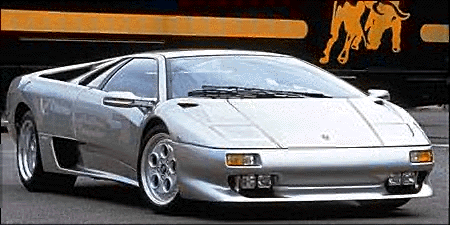
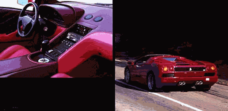
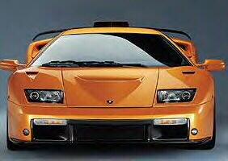
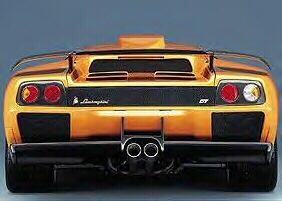

Lamborghini Diablo


The New GT model (below)

Only 80 will be made.
Specs(Diablo 2WD/GT)
Price |
$239,000 / $325,000 |
Top Speed |
205mph / 210mph |
Acceleration |
|
Engine |
|
0-30mph |
2.2sec / N/A |
Type |
V12, 48valve Quad cam |
0-60mph |
4.1sec / 3.9sec |
Displacement |
5.7L(5729cc) / 6L(6000cc) |
0-100 |
8.7sec? / N/A |
Power |
492hp@7000rpm / 530+hp@?rpm |
1/4 mile |
12.3sec/?mph / N/A |
Torque |
428 lbs-ft@5200rpm / N/A |
Weight |
3,475 lbs / 3,220 lbs |
Handling |
|
Gas mileage |
|
Skidpad |
.90g(est.)? (.87 for Diablo VT) / N/A |
City |
13.1mpg / N/A |
600ft slalom |
N/A |
Highway |
N/A |
Powertrain |
Mid-engined, All wheel drive, 6 speed manual |
(? = incomplete data or unverified info, N/A = info Not Available)
Beyond the specs:
The Lamborghini Diablo, a car synonymous with the word supercar, it was the first car to be named worlds fastest. Nowadays however, its design is aging, but it will still attract attention just as much as its faster rival the F50 (although it was made in the time of the slower F40). The Diablo is the only supercar that is on a continuous production run and because of that it cost only slightly over $200,000 which is half the price of any competitive Ferrari. Not only does the out side of this car say money, but the inside does too, just not in a Jaguar sense. The Diablo comes in many different flavors all with there own unique personality. There is the all wheel drive Diablo VT which is the easiest to drive, the standard version the 2wd, the lightened 2wd called the SV which is the hardest to drive and is the second fastest. (The SV is lighter do to removal of equipment like AC and other unnecessary things.) Then there is the fastest the SE30 which is a SV with a tuned engine and it can do 208mph (0-60 is slower 4.0sec compared to 3.9sec), but the SE30 Jota is even faster doing 0-60 in 3.8 seconds. The main problem with the Diablo is its adequate but tail happy handling, fortunately the SV has improved handling. Although VT has the lowest cornering limits due to the 108lbs added on by the AWD system, its behavior at the limit and its AWD make it the easiest to handle. This car suits any driver that likes performance and wishes to show off their wealth. This car gives the wealthy the luxury they want (choose the VT for that), the pure enthusiast the performance they want (pick the SV), and Lamborghini fans a piece of Lamborghini history. (Select the SE30 and the SE30 Jota, which were anniversary versions celebrating Lamborghini's 30th anniversary) Lamborghini just need to add the Cala (a lower end model) to its line up and modernize the Diablo since the much cheaper Dodge Viper is starting to edge into its performance range.
~Oracle